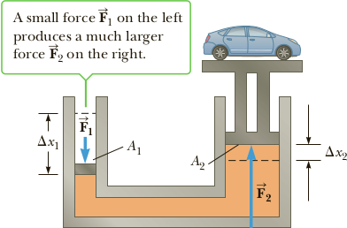
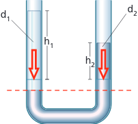
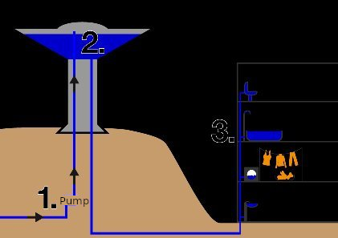
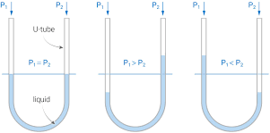

Variation of Pressure with Depth
When a fluid is at rest in a container, all portions of the fluid must be in static equilibrium—at rest with respect to the observer. Furthermore, all points at the same depth must be at the same pressure. If this were not the case, fluid would flow from the higher pressure region to the lower pressure region. For example, consider the small block of fluid shown in Figure 1a. If the pressure were greater on the left side of the block than on the right, F1 would be greater than F2, and the block would accelerate to the right and thus would not be in equilibrium.
Next, let’s examine the fluid contained within the volume indicated by the darker region in Figure 1b. This region has cross-sectional area A and extends
from position y1 to position y2 below the surface of the liquid.
Three external forces act on this volume of fluid: the force of gravity, Mg; the upward force P2A exerted by the liquid below it; and a downward force P1A exerted by the fluid above it. Because the given volume of fluid is in equilibrium, these forces must add to zero, so we get
P2A − P1A − Mg = 0 (3.1.1)
From the definition of density, we have
M = ρV = ρA(y1 − y2) (3.1.2)
Substituting Equation 3.1.2 into Equation 3.1.1, canceling the area A, and rearranging terms, we get
Notice that (y1 − y2) is positive, because y2, y1. The force P2A is greater than the force P1A by exactly the weight of water between the two points. This is the same principle experienced by the person at the bottom of a pileup in football or rugby.
Atmospheric pressure is also caused by a piling up of fluid—in this case, the fluid is the gas of the atmosphere. The weight of all the air from sea level to the edge of space results in an atmospheric pressure of P0 = 1.013 x 105 Pa (equivalent to 14.7 lb/in.) at sea level. This result can be adapted to find the pressure P at any depth h = (y1 − y2) = (0 − y2) below the surface of the water:
P = P0 + ρgh (3.1.3)
According to Equation 3.1.3, the pressure P at a depth h below the surface of a liquid open to the atmosphere is greater than atmospheric pressure by the amount ρgh. Moreover, the pressure isn’t affected by the shape of the vessel, as shown in Figure 9.9. Equation 3.1.3 is often called the equation of hydrostatic equilibrium or Legge di Stevino, by Simon Stevin (1548-1620), (latinizzato in Stevino), scienziato fiammingo.
Because the pressure in a fluid depends on depth and on the value of P0, any increase in pressure at the surface must be transmitted to every point in the fluid. This was first recognized by the French scientist Blaise Pascal (1623–1662) and is called Pascal’s principle:
A change in pressure applied to an enclosed fluid is transmitted undiminished to every point of the fluid and to the walls of the container.
Application - Hydraulic Lifts
An important application of Pascal’s principle is the hydraulic press (Fig. 2a). A downward force F1 is applied to a small piston of area A1. The pressure is transmitted through a fluid to a larger piston of area A2. As the pistons move and the fluids in the left and right cylinders change their relative heights, there are slight differences in the pressures at the input and output pistons. Neglecting these small differences, the fluid pressure on each of the pistons may be taken to be the same; P1 = P2. From the definition of pressure, it then follows that F1 /A1 = F/A2. Therefore, the magnitude of the force F2 is larger than the magnitude of F1 by the factor A2/A1. That’s why a large load, such as a car, can be moved on the large piston by a much smaller force on the smaller piston. Hydraulic brakes, car lifts, hydraulic jacks, forklifts, and other machines make use of this principle.
Communicating vessels
Consideriamo due vasi comunicanti riempiti con lo stesso liquido ed esaminiamo cosa accade su una superficie S di liquido posta nel tubo di collega-mento. Se l’altezza hA del liquido nel recipiente di sinistra è maggiore di hB, anche la pressione che agisce su S da sinistra è maggiore di quella da destra. Soltanto quando la quota del liquido è la stessa nei due recipienti, le due pressioni che agiscono su S sono uguali e il liquido è in equilibrio.
Dimostriamo il principio dei vasi comunicanti e proviamo che la legge di Stevino induce il liquido a raggiungere la condizione di equilibrio. Senza ledere in generalità consideriamo due vasi in comunicazione tra loro.
In condizione di equilibrio le pressioni p1,p2 agenti sul fondo dei due vasi sono le stesse, per cui
p1 = p2
Dalla legge di Stevino possiamo esprimere le pressioni agenti sul fondo dei vasi comunicanti, tenendo presente che essi sono aperti e dunque le superfici libere sono soggette all'azione della pressione atmosferica p0
p0+ρghA = p0 + ρ g hB
Ovviamente la densità e l'accelerazione di gravità sono le stesse, dunque possiamo semplificare
hA = hB
Consideriamo il caso più generale, in cui i vasi comunicanti contengono due liquidi diversi (di densità d1 e d2) che non si mescolano. Per esempio, i due liquidi potrebbero essere mercurio e acqua,
Il sistema è in equilibrio se le due pressioni esercitate dalle due colonne di liquido (alte h1 e h2) sono uguali. All’equilibrio il mercurio, che ha una densità maggiore, raggiunge un’altezza minore dell’acqua. Le pressioni esercitate dalle colonne di liquido sulla loro base sono
ρ1 = d1 gh1 e p2 = d2 gh2
La loro uguaglianza fornisce l’equazione
d1gh1 = d2gh2
che può essere scritta come
h1/h2 = d2/d1
Di solito in città ci sono delle torri con un grande serbatoio sulla sommità nel quale viene immessa l'acqua con delle pompe, e poi quando se ne ha bisogno quell'acqua viene trasportata al palazzo con delle tubature e per il principio dei vasi comunicanti riesce a raggiungere anche l'ultimo piano, senza l'uso di pompe.
Pressure Measurements
A practical application of such communicating tubes is found in liquid manometers which are frequently used in measuring pressures.
A simple device for measuring pressure is the open-tube manometer (Fig. 1).
One end of a U-shaped tube containing a liquid is open to the atmosphere, and the other end is connected to a system of unknown pressure P. The pressure at point B equals P0 = ρgh, where ρ is the density of the fluid. The pressure at B, however, equals the pressure at A, which is also the unknown pressure P. We conclude that P = P0 + ρgh. The pressure P is called the absolute pressure, and P − P0 is called the gauge pressure. If P in the system is greater than atmospheric pressure, h is positive. If P is less than atmospheric pressure (a partial vacuum), h is negative, meaning that the right-hand column in Figure 9.13a is lower than the left-hand column.
Barometer
Another instrument used to measure pressure is the barometer (Fig. 2), invented by Evangelista Torricelli (1608-1647). A long tube closed at one end is filled with mercury and then inverted into a dish of mercury.
The closed end of the tube is nearly a vacuum, so its pressure can be taken to be zero. It follows that P0 = ρgh, where ρ is the density of the mercury and h is the height of the mercury column. Note that the barometer measures the pressure of the atmosphere, whereas the manometer measures pressure in an enclosed fluid.
One atmosphere of pressure is defined to be the pressure equivalent of a column of mercury that is exactly 0.76 m in height at 0°C with g = 9.806 65 m/s2. At this temperature, mercury has a density of 13.595 x 103 kg/m3; therefore,
P0 = ρgh = (13.595 x 103 kg/m3)(9.80665 m/s2)(0.760 m) = 1.013 x 105 Pa = 1 atm
It’s interesting to note that the force of the atmosphere on our bodies (assuming a body area of 2 000 in.) is extremely large, on the order of 30 000 lbs! If it were not for the fluids permeating our tissues and body cavities, our bodies would collapse. The fluids provide equal and opposite forces. In the upper atmosphere or in space, sudden decompression can lead to serious injury and death. Air retained in the lungs can damage the tiny alveolar sacs, and intestinal gas can even rupture internal organs.
Blood Pressure Measurements
A specialized manometer (called a sphygmomanometer) is often used to measure blood pressure. In this application, a rubber bulb forces air into a cuff wrapped tightly around the upper arm and simultaneously into a manometer, as in Figure 9.14. The pressure in the cuff is increased until the flow of blood through the brachial artery in the arm is stopped. A valve on the bulb is then opened, and the measurer listens with a stethoscope to the artery at a point just below the cuff. When the pressure in the cuff and brachial artery is just below the maximum value produced by the heart (the systolic pressure), the artery opens momentarily on each beat of the heart. At this point, the velocity of the blood is high and turbulent, and the flow is noisy and can be heard with the stethoscope. The manometer is calibrated to read the pressure in millimeters of mercury, and the value obtained is about 120 mm for a normal heart. Values of 130 mm or above are considered high, and medication to lower the blood pressure is often prescribed for such patients. As the pressure in the cuff is lowered further, intermittent sounds are still heard until the pressure falls just below the minimum heart pressure (the diastolic pressure). At this point, continuous sounds are heard. In the normal heart, this transition occurs at about 80 mm of mercury, and values above 90 require medical intervention. Blood pressure readings are usually expressed as the ratio of the systolic pressure to the diastolic pressure, which is 120/80 for a healthy heart.